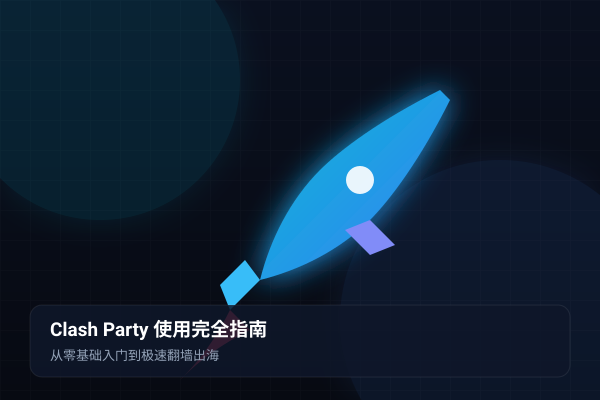
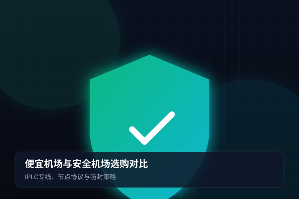
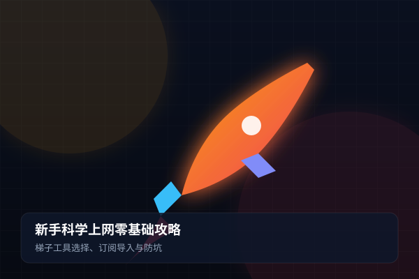
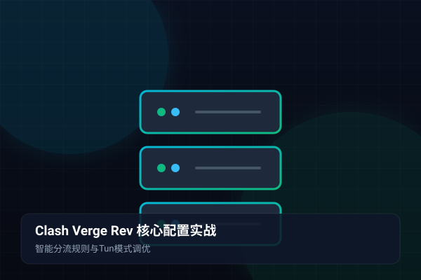
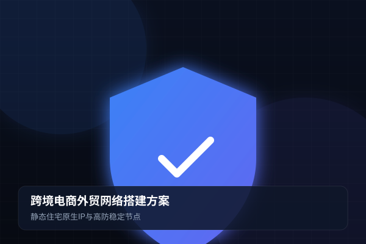
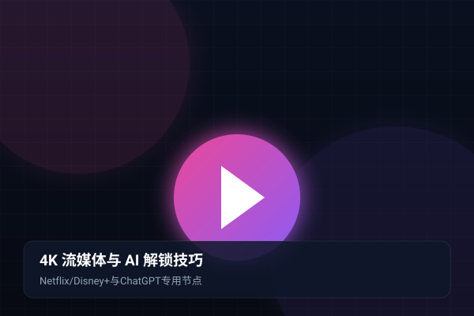
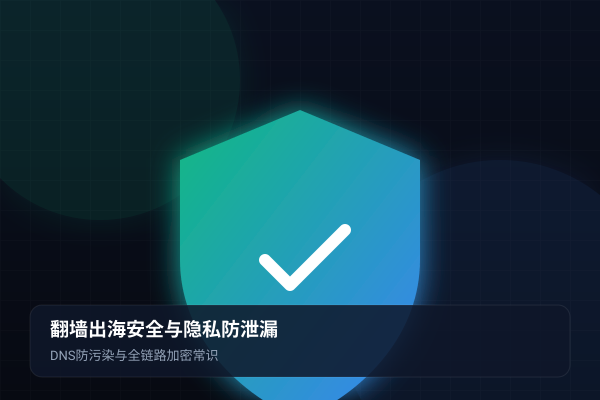

2026最新Clash Party机场配置与使用完全指南：从新手入门到极速翻墙出海
深度解析新一代跨平台代理客户端 Clash Party 的下载安装、wgetcloud 订阅一键导入及智能分流策略配置。
阅读全文摒弃粗制滥造的廉价超售架构，采用电信工业级 IPLC 纯物理内网专线，构建真正无感、免维护的高速出海体验。
境内机房直连境外数据中心，不经过公共国际出口海缆与防火墙审查，彻底免除敏感时期封锁断连的风险，丢包率持续低于 0.1%。
同时接入中国电信、联通、移动多线骨干网络，系统毫秒级为用户匹配物理距离最近、网络延迟最低的接入机房，告别跨运营商减速。
全节点配备海外原生 Clean IP 池，完美支持 Netflix、Disney+ 4K 播放以及 OpenAI ChatGPT、Claude 3.5、Midjourney 等生产力套件。
深度适配 Clash Party、Clash Verge Rev、Shadowrocket (小火箭)、Sing-box 等主流工具，Windows、macOS、Android、iOS 一键订阅同步。
严格遵循国际 No-Log 零日志原则，节点全量运行于 RAM 纯内存盘环境，从不记录用户浏览轨迹，配合 Fake-IP 彻底防止 DNS 泄露。
自研全球探针集群全天候监测节点健康，一旦某条线路出现波动，智能负载系统瞬间平滑无感转移至备用专线，追剧办公永不断流。
无论是日常网页查阅还是重度 4K 影音、多店铺跨境出海，都能找到完美契合的专属加速方案。
无论你的职业与出海诉求是什么，wgetcloud 都能提供坚实、稳定、无感的网络基础支撑。
为 Amazon、TikTok、Shopee、Etsy 店铺运营及 WhatsApp 商务谈判提供低延迟专线与纯净海外 IP，彻底杜绝关联封号风险。
畅通无阻拉取 GitHub 开源代码库，访问 Google Scholar、IEEE、Nature 学术数据库，秒开 Docker 镜像与 HuggingFace 模型权重。
原生解锁 Netflix、Disney+、YouTube Premium，晚高峰 4K 60FPS 杜比视界零卡顿秒开，沉浸式享受全球无删减视听盛宴。
稳定参与 Zoom、Google Meet 跨国高清音视频会议，畅快提交 Canvas / Blackboard 课后作业，跨洋网络永不掉线。
为 OpenAI ChatGPT、Claude 3.5 Sonnet、Perplexity 提供免风控的高防干净通道，告别“Access Denied”与无休止人机验证。
针对 Steam、Epic、战网、外服英雄联盟、Apex 等进行 UDP 全端口智能加速，专线直达机房，告别跳 ping 与丢包困扰。
无论是 Windows、macOS 电脑还是 iPhone、Android 手机，只需三分钟即可轻松导入订阅，开启无界上网。
在官网教程页下载最新版 Clash Party 客户端并安装，Windows 用户建议以管理员身份运行开启虚拟驱动。
打开客户端侧边栏进入 Profiles (配置)，粘贴订阅 URL 并点击 Download，自动拉取全球专线节点列表。
选择 Rule (规则模式)，选中任意绿色低延迟专线节点，勾选开启“系统代理”，即可畅享 4K 极速翻墙出海！
从 GitHub Releases 或 wgetcloud 镜像库下载安装 Clash Verge Rev，原生支持 Windows 10/11 与 Apple M 系列芯片。
在左侧进入“订阅 (Profiles)”，在顶部输入框粘贴 wgetcloud 提供的 Clash 链接，点击“保存并下载”。
在设置中打开“Tun 模式”，虚拟网卡将自动接管全部命令行、微软商店与外服游戏流量，彻底杜绝漏网与 DNS 污染。
在代理分组中点击小闪电图标完成批量测速，选择香港或日本 01 专线节点，即可体验毫秒级响应。
在 iPhone 的 App Store 应用商店切换登录美区/港区苹果账号，搜索并下载正版 Shadowrocket (小火箭)。
使用 Safari 访问 wgetcloud 后台点击“一键导入到 Shadowrocket”，或使用小火箭扫描后台订阅二维码。
在主界面确认“全局路由”保持在“配置 (Config)”模式，国内应用走直连，国外受限站点自动走专线加速。
首次启动根据系统提示输入锁屏密码允许添加 VPN 配置，顶部出现 VPN 图标即可畅享无界漫游。
在 Android 手机上下载并安装 Clash Meta for Android 或 Surfboard 客户端，授予必要的后台常驻权限。
在手机浏览器打开 wgetcloud 官网复制专属订阅链接，进入软件的“配置”界面粘贴并保存配置。
进入“代理”标签页，点击右上角进行连通性测速，或直接选用 Auto 自动优选分组，软件自动选择最快节点。
回到主界面轻触“已停止”按钮切换为“运行中”，通知栏显示连接状态，手机即可极速访问 Google 与 YouTube。
无论是跨境团队、学术博士还是海外流媒体发烧友，听听他们长期使用 wgetcloud 的真实感受。
“以前用过不少号称几块钱无限流量的便宜机场，每到晚上 8 点后卡到怀疑人生，甚至半年跑路了两家。换用 wgetcloud 的专线后，晚高峰看 YouTube 4K 从未缓冲过，真的是一分钱一分货！”
“我们外贸团队有十几位业务员，经常需要跟欧美买家开 Zoom 视频和实时收发 WhatsApp。wgetcloud 的 IPLC 专线极其稳定，敏感时期也完全不掉线，帮我们挽救了很多关键外贸订单。”
“重度使用 ChatGPT Plus 和 Claude 3.5 写论文代码，最怕节点跳人机验证或封号。wgetcloud 的美国原生 IP 非常干净，从没报过 Access Denied，在 Mac 上的 Clash Party 体验非常舒适。”
汇集大家在选购、配置与日常使用中最关心的高频疑难问题，助你快速解惑。
wgetcloud 核心骨干链路全线采用高端企业级内网 IPLC 物理专线，不经过公共国际出口海缆与 GFW 防火墙检测，全天候零丢包。同时配备三网 BGP 智能多线接入与原生 Clean IP 出口，晚高峰 4K 视频秒开，即便在网络敏感时期依然稳定如初，彻底告别廉价机场跑路与断流的困扰。
wgetcloud 原生支持 Windows、macOS、Android、iOS 及软路由等全平台主流软件，包括 Clash Party、Clash Verge Rev、Shadowrocket (小火箭)、Sing-box、Clash for Android 等。用户只需登录官网后台复制专属订阅，即可在客户端内“一键导入”全自动生成数十条极速节点，3分钟轻松搞定。
完全原生支持！wgetcloud 部署了遍布全球各地区的优质住宅原生 Clean IP 节点，完美解锁 Netflix (含全片库及非自制剧)、Disney+、HBO Max、YouTube Premium、TikTok 以及 OpenAI ChatGPT、Claude 3.5、Midjourney 等海内外热门应用，杜绝“所在地不支持”与频繁人机验证。
wgetcloud 支持多设备并发在线，不限制安装设备数量。一个订阅即可同步覆盖个人的 Windows 笔记本、Mac 电脑、iPhone 手机、安卓备用机及 iPad 平板，非常适合个人日常多端办公或小型外贸跨境电商团队协同使用。
wgetcloud 拥有完善详尽的图文教程中心（含视频演示），同时提供全天候工单技术支持与在线客服答疑。无论遇到客户端报错、规则设置还是特定海外网站无法加载，专业技术人员均会协助快速排查。
完全不会。所有客户端均默认采用智能“规则模式 (Rule)”。访问国内的百度、微信、网银、淘宝等直接走本地直连网络，不消耗任何套餐流量；仅在访问被墙海外网站时自动走专线加速，保障国内外访问互不冲突。
由 wgetcloud 实验室倾力撰写的原创教程，涵盖 Clash 规则进阶、安全防封、外贸出海与 4K 流媒体实操。

新手教程深度解析新一代跨平台代理客户端 Clash Party 的下载安装、wgetcloud 订阅一键导入及智能分流策略配置。
阅读全文 机场评测
机场评测

安全指南
小白入门 技术解析
技术解析

进阶实战替代旧版 CFW 的最佳开源神器，详解 Meta 内核切换、Tun 虚拟网卡全量接管与自定义分流规则合并。
阅读全文
跨境出海
AI与流媒体攻克海外商业 IP 风控封锁，解析原生住宅 Clean IP 解锁与 Clash 自动化分流路由实战。
阅读全文 移动端指南
移动端指南
苹果 iPhone 用户最强代理工具 Shadowrocket (小火箭) 完整配置指南，一键扫码导入与多端同步。
阅读全文
隐私安全